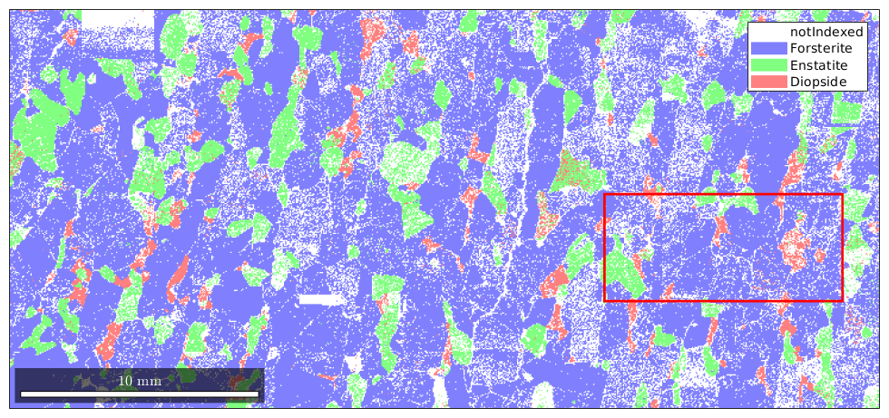
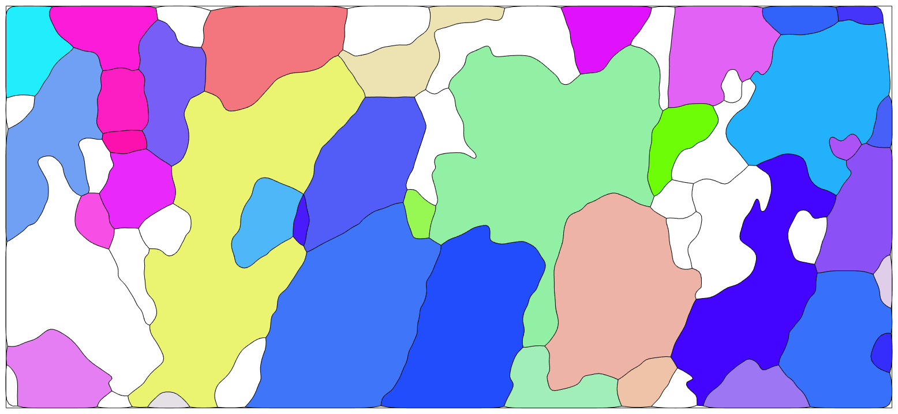
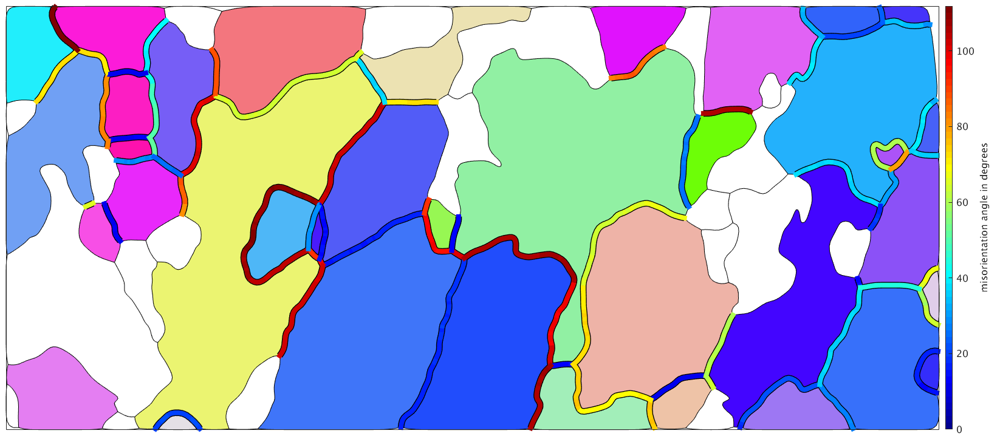
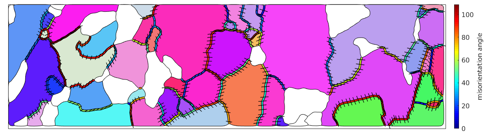

Analyse misorientations along grain boundaries
plotx2east mtexdata forsterite % % correct EBSD spatial coordinates % % % O************O xmax,ymax % * * % * selected * % * subregion * % * * % xmin,ymin O************O % xmin = 7000; ymin = 4500; xmax = 20000; ymax = 8100; region = [xmin ymin xmax-xmin ymax-ymin]; plot(ebsd) rectangle('position',region,'edgecolor','r','linewidth',2) % select EBSD data within region and printout to command window condition = inpolygon(ebsd,region); % select indices by polygon ebsd = ebsd(condition);
and re-calculate grain model to cleanup grain boundaries
% segmentation angle typically 10 to 15 degrees seg_angle = 10; % minimum indexed points per grain between 5 and 10 min_points = 10; % Restrict to indexed only points [grains,ebsd.grainId,ebsd.mis2mean] = calcGrains(ebsd('indexed'),'angle',seg_angle*degree); % Remove small grains with less than min_points indexed points grains = grains(grains.grainSize > min_points); % Re-calculate grain model to cleanup grain boundaries with less than minimum index points % used ebsd points within grains having the minium indexed number of points (e.g. 10 points) ebsd = ebsd(grains); [grains,ebsd.grainId,ebsd.mis2mean] = calcGrains(ebsd('indexed'),'angle',seg_angle*degree); % smooth grains grains = smooth(grains,4)
grains = grain2d
Phase Grains Pixels Mineral Symmetry Crystal reference frame
1 46 12891 Forsterite mmm
2 11 1287 Enstatite mmm
3 10 448 Diopside 12/m1 X||a, Y||b, Z||c*
boundary segments: 2957
triple points: 95
Properties: GOS, meanRotation
plot the data
%plot(ebsd('fo'),ebsd('fo').orientations,'micronbar','off') plot(grains('fo'),grains('fo').meanOrientation,'micronbar','off','figSize','large') hold on plot(grains.boundary) hold off
I'm going to colorize the orientation data with the standard MTEX colorkey. To view the colorkey do: oM = ipdfHSVOrientationMapping(ori_variable_name) plot(oM)
% Use boundary('Fo','Fo') to chose only Fo-Fo boundaries gB = grains.boundary.reorder; gB_FoFo = gB('Fo','Fo'); % visualize the misorientation angle % draw the boundary in black very thick hold on plotOrdered(gB_FoFo,'linewidth',4); % and on top of it the boundary colorized according to the misorientation % angle hold on plotOrdered(gB_FoFo,gB_FoFo.misorientation.angle./degree,'linewidth',2); %plot(gB_FoFo,gB_FoFo.misorientation.angle./degree,'linewidth',5); hold off mtexColorMap jet mtexColorbar('title','misorientation angle')
e =
PropertyEvent with properties:
AffectedObject: [1×1 ColorBar]
Source: [1×1 matlab.graphics.internal.GraphicsMetaProperty]
EventName: 'PostSet'
 Computing the misorientation axes in specimen coordinates can not be done using the boundary misorientations only. In fact, we require the orientations on both sides of the grain boundary. Lets extract them first.
% do only consider every third boundary segment Sampling_N=3; gB_FoFo = gB_FoFo(1:Sampling_N:end); % the following command gives a Nx2 matrix of orientations which contains % for each boundary segment the orientation on both sides of the boundary. ori = ebsd(gB_FoFo.ebsdId).orientations; % the misorientation axis in specimen coordinates gB_axes_FoFo = axis(ori(:,1),ori(:,2)); % axes can be plotted using the command quiver hold on quiver(gB_FoFo,gB_axes_FoFo,'linewidth',1,'color','k','autoScaleFactor',0.3) hold off
Note, the shorte the axes the more they stick out of the surface. What may be a bit surprising is that the misorientations axes have some abrupt changes at the left hands side grain boundary. The reason for this is that the misorientations angle at this boundary is close to the maximum misorientation angle of 120 degree. As a consequence, slight changes in the misorientation may leed to a completely different disorientation, i.e., a different but symmetrically equivalent misorientation has a smaller misorientation angle.
| DocHelp 0.1 beta |